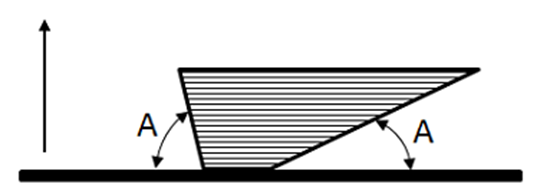
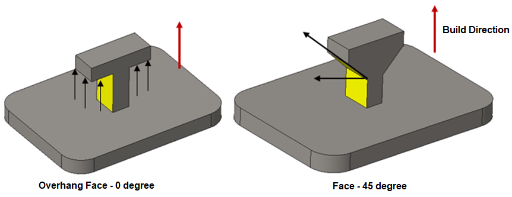
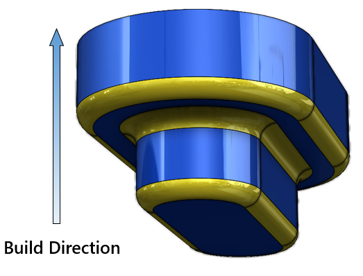

製造を容易にするため、サポートが必要な面は最小限であるべきです。
積層造形（Additive Manufacturing）プロセスでは、製造時間を短縮し、サポート除去や清掃といった二次作業を避けるために、サポートの必要性は最小限に抑える必要があります。
積層造形方式では、部品はレイヤーごとに造形されます。その特性上、設計によっては追加のサポートが必要になる場合があります。
可能な限り、FDM／SLA／3DP においてサポートを必要とするネガティブドラフト、オーバーハング、アンダーカットといった形状は避けてください。

サポートを回避するための面角度（Face Angle to Avoid Supports：A）のデフォルト値は、ルール内で設定できます。
また、デフォルト値に加えて、材料ごとに異なる面角度を表示するようテーブルを構成することも可能です。
設定された値よりも面角度（A）が小さい面のみが、サポート要件として報告されます。
さらに、「最大エッジ長が指定値以下の面を無視する（Ignore faces with maximum edge length）」パラメータを設定することで、小さな面をチェック対象から除外することもできます。この条件では、エッジ長が設定値より小さい面は無視されます。

注記:
ユーザー入力において、積層造形のサブプロセスとして SLS（選択的レーザー焼結）が選択されている場合、このルールは適用されません。
フィレットは、このルールの解析対象から除外されます。
